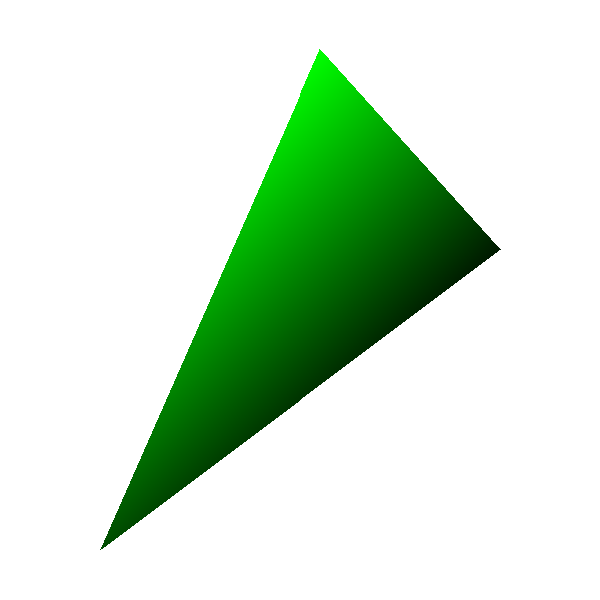
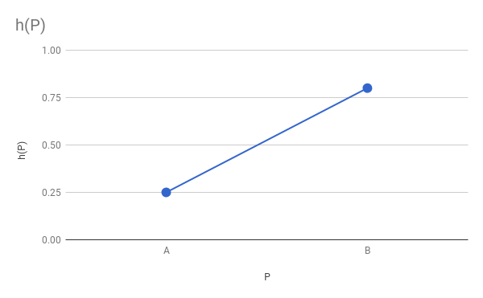

Shaded Triangles
In the previous chapter, we developed an algorithm to draw a triangle filled with a solid color. Our goal for this chapter is to draw a shaded triangle—that is, a triangle filled with a color gradient.
Defining Our Problem
We want to fill the triangle with different shades of a single color. It will look like Figure 8-1.
We need a more formal definition of what we’re trying to draw. To do this, we’ll assign a real value \(h\) to each vertex, denoting the intensity of the color at the vertex. \(h\) is in the \([0.0, 1.0]\) range, where \(0.0\) represents the darkest possible shade (that is, black) and \(1.0\) represents the brightest possible shade (that is, the original color—not white!).

To compute the exact color shade of a pixel given the base color of the triangle \(C\) and the intensity at that pixel \(h\), we’ll multiply channel-wise: \(C_h = (R_C \cdot h, G_C \cdot h, B_C \cdot h)\). Therefore \(h = 0.0\) yields pure black, \(h = 1.0\) yields the original color \(C\), and \(h = 0.5\) yields a color half as bright as the original one.
Computing Edge Shading
In order to draw a shaded triangle, all we need to do is compute a value of \(h\) for each pixel of the triangle, compute the corresponding shade of the color, and paint the pixel. Easy!
At this point, however, we only know the values of \(h\) for the triangle vertices, because we chose them. How do we compute values of \(h\) for the rest of the triangle?
Let’s start with the edges of the triangle. Consider the edge \(AB\). We know \(h_A\) and \(h_B\). What happens at \(M\), the midpoint of \(AB\)? Since we want the intensity to vary smoothly from \(A\) to \(B\), the value of \(h_M\) must be between \(h_A\) and \(h_B\). Since \(M\) is in the middle of \(AB\), why not choose \(h_M\) to be in the middle of \(h_A\) and \(h_B\)—that is, their average?
More formally, we have a function \(h = f(P)\) that gives each point \(P\) an intensity value \(h\); we know its values at \(A\) and \(B\), \(h(A) = h_A\) and \(h(B) = h_B\), respectively. We want this function to be smooth. Since we know nothing else about \(h = f(P)\), we can choose any function that is compatible with what we do know, such as a linear function (Figure 8-2).

This is suspiciously similar to the situation in the previous chapter: we had a linear function \(x = f(y)\), we knew the values of this function at the vertices of the triangle, and we wanted to compute values of \(x\) along its sides. We can compute values of \(h\) along the sides of the triangle in a very similar way, using Interpolate with y as the independent variable (the values we know) and h as the dependent variable (the values we want):
x01 = Interpolate(y0, x0, y1, x1) h01 = Interpolate(y0, h0, y1, h1) x12 = Interpolate(y1, x1, y2, x2) h12 = Interpolate(y1, h1, y2, h2) x02 = Interpolate(y0, x0, y2, x2) h02 = Interpolate(y0, h0, y2, h2)
Next, we concatenated the \(x\) arrays for the “short” sides and then determined which of x02 and x012 was x_left and which was x_right. Again, we can do something very similar here for the \(h\) vectors.
However, we will always use the \(x\) values to determine which side is left and which side is right, and the \(h\) values will just “follow along.” \(x\) and \(h\) are properties of actual points on the screen, so we can’t freely mix-and-match left- and right-side values.
We can code this as follows:
// Concatenate the short sides
remove_last(x01)
x012 = x01 + x12
remove_last(h01)
h012 = h01 + h12
// Determine which is left and which is right
m = floor(x012.length / 2)
if x02[m] < x012[m] {
x_left = x02
h_left = h02
x_right = x012
h_right = h012
} else {
x_left = x012
h_left = h012
x_right = x02
h_right = h02
}
This is very similar to the relevant section of the code in the previous chapter (Listing 7-1), except that every time we do something with an x vector, we do the same with the corresponding h vector.
Computing Interior Shading
The last step is drawing the actual horizontal segments. For each segment, we know x_left and x_right, as in the previous chapter; now we also know h_left and h_right. But this time we can’t just iterate from left to right and draw every pixel with the base color: we need to compute a value of \(h\) for each pixel of the segment.
Again, we can assume \(h\) varies linearly with \(x\), and use Interpolate to compute these values. In this case, the independent variable is \(x\), and it goes from the x_left value to the x_right value of the specific horizontal segment we’re shading; the dependent variable is \(h\), and its corresponding values for x_left and x_right are h_left and h_right for that segment:
x_left_this_y = x_left[y - y0]
h_left_this_y = h_left[y - y0]
x_right_this_y = x_right[y - y0]
h_right_this_y = h_right[y - y0]
h_segment = Interpolate(x_left_this_y, h_left_this_y,
x_right_this_y, h_right_this_y)
Or, expressed in a more compact way:
h_segment = Interpolate(x_left[y - y0], h_left[y - y0],
x_right[y - y0], h_right[y - y0])
Now it’s just a matter of computing the color for each pixel and painting it! Listing 8-1 shows the complete pseudocode for DrawShadedTriangle.
DrawShadedTriangle (P0, P1, P2, color) {
❶// Sort the points so that y0 <= y1 <= y2
if y1 < y0 { swap(P1, P0) }
if y2 < y0 { swap(P2, P0) }
if y2 < y1 { swap(P2, P1) }
// Compute the x coordinates and h values of the triangle edges
x01 = Interpolate(y0, x0, y1, x1)
h01 = Interpolate(y0, h0, y1, h1)
x12 = Interpolate(y1, x1, y2, x2)
h12 = Interpolate(y1, h1, y2, h2)
x02 = Interpolate(y0, x0, y2, x2)
h02 = Interpolate(y0, h0, y2, h2)
// Concatenate the short sides
remove_last(x01)
x012 = x01 + x12
remove_last(h01)
h012 = h01 + h12
// Determine which is left and which is right
m = floor(x012.length / 2)
if x02[m] < x012[m] {
x_left = x02
h_left = h02
x_right = x012
h_right = h012
} else {
x_left = x012
h_left = h012
x_right = x02
h_right = h02
}
// Draw the horizontal segments
❷for y = y0 to y2 {
x_l = x_left[y - y0]
x_r = x_right[y - y0]
❸h_segment = Interpolate(x_l, h_left[y - y0], x_r, h_right[y - y0])
for x = x_l to x_r {
❹shaded_color = color * h_segment[x - x_l]
canvas.PutPixel(x, y, shaded_color)
}
}
}The pseudocode for this function is very similar to that for the function developed in the previous chapter (Listing 7-1). Before the horizontal segment loop ❷, we manipulate the \(x\) vectors and the \(h\) vectors in similar ways, as explained above. Inside the loop, we have an extra call to Interpolate ❸ to compute the \(h\) values for every pixel in the current horizontal segment. Finally, in the inner loop we use the interpolated values of \(h\) to compute a color for each pixel ❹.
Note that we’re sorting the triangle vertices as before ❶. However, we now consider these vertices and their attributes, such as the intensity value \(h\), to be an indivisible whole; that is, swapping the coordinates of two vertices must also swap their attributes.
Summary
In this chapter, we’ve extended the triangle-drawing code developed in the previous chapter to support smoothly shaded triangles. Note that we can still use it to draw single color triangles by using 1.0 as the value of \(h\) for all three vertices.
The idea behind this algorithm is actually more general than it seems. The fact that \(h\) is an intensity value has no impact on the “shape” of the algorithm; we assign meaning to this value only at the very end, when we’re about to call PutPixel. This means we could use this algorithm to compute the value of any attribute of the vertices of the triangle, for every pixel of the triangle, as long as we assume this value varies linearly on the screen.
We will indeed use this algorithm to improve the visual appearance of our triangles in the upcoming chapters. For this reason, it’s a good idea to make sure you really understand this algorithm before proceeding further.
In the next chapter, however, we take a small detour. Having mastered the drawing of triangles on a 2D canvas, we will turn our attention to the third dimension.